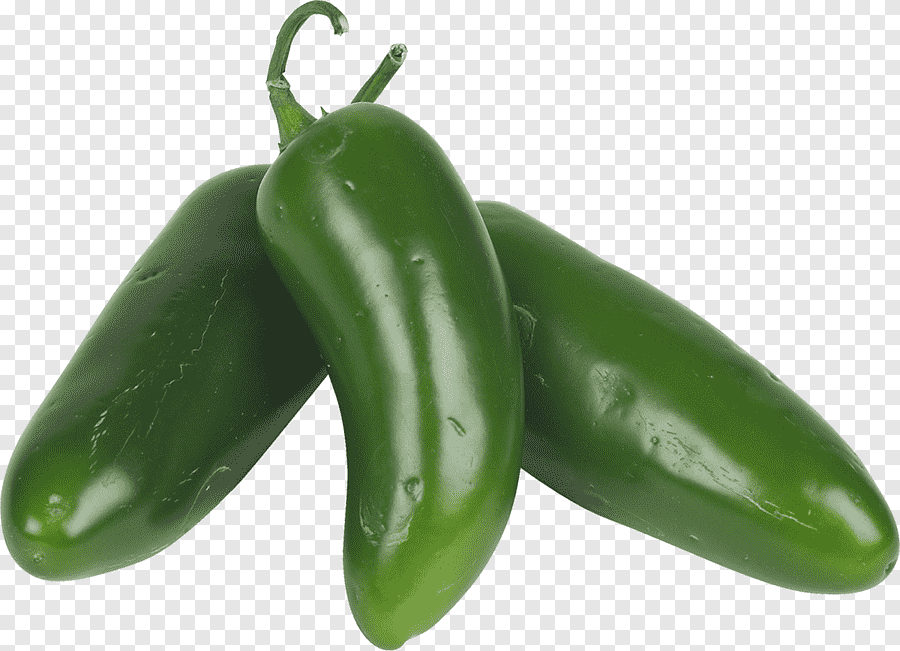
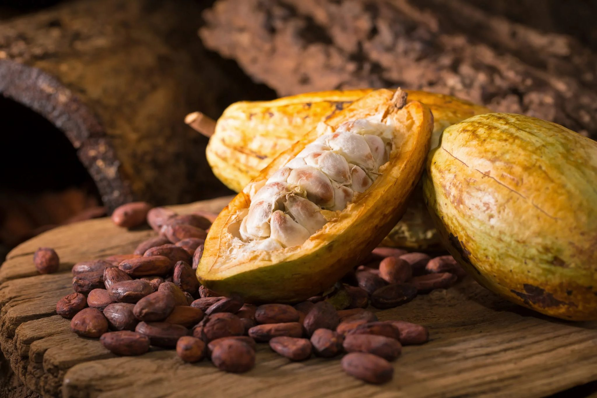
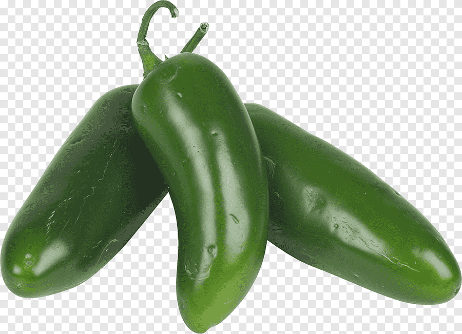
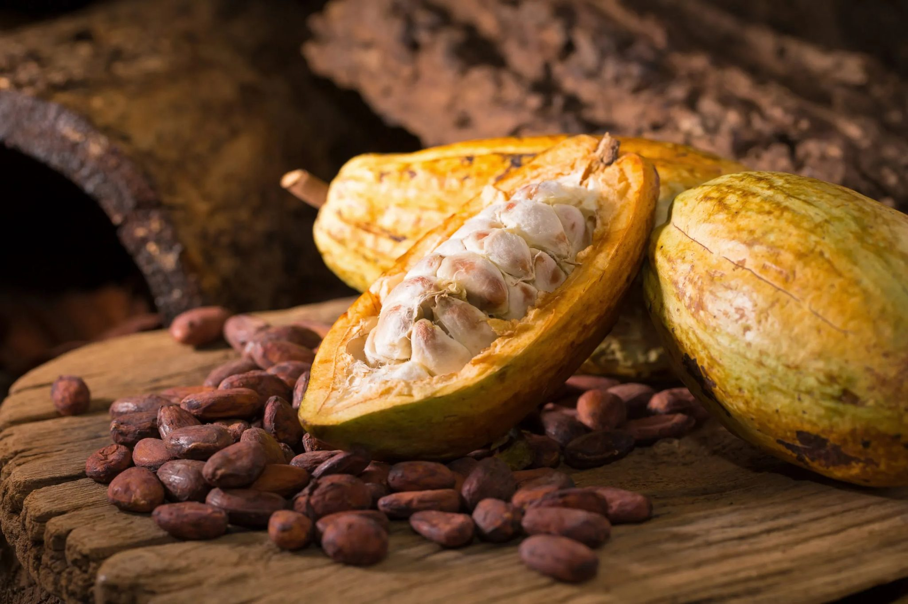

Economía de la Civilización Lenca
Introducción a su Economía
La economía de la civilización Lenca en Honduras estaba basada principalmente en la agricultura, el trueque, la caza, la pesca y la alfarería. Esta civilización logró establecer un sistema económico autosuficiente que aprovechaba los recursos naturales de su entorno, especialmente en las regiones montañosas y valles fértiles del occidente de Honduras.
Actividades Económicas Principales
- Agricultura: Cultivo de maíz, frijoles, yuca, chile, ayote, cacao y algodón.
- Caza y pesca: Recolectaban animales de río y cazaban venados, aves y pequeños mamíferos.
- Recolección: Obtención de frutas silvestres, miel y hierbas medicinales.
- Alfarería: Producción de cerámica utilitaria y ceremonial, que también servía como objeto de intercambio.
- Textilería: Elaboraban tejidos de algodón con tintes naturales para uso personal y comercial.
- Comercio: Intercambiaban productos con otras etnias mesoamericanas, especialmente en mercados regionales.
Productos Agrícolas Importantes
| Producto | Uso | Importancia |
|---|---|---|
| Maíz | Alimento principal (tortillas, tamales, atol) | Base de su dieta y de rituales religiosos |
| Frijol | Complemento alimenticio | Rico en proteína vegetal |
| Yuca | Harinas y bebidas fermentadas | Fuente de carbohidratos |
| Chile | Condimento y conservante | Usado en medicina y cocina |
| Cacao | Bebidas rituales y moneda | Alto valor ceremonial y económico |
 



Sistemas de Intercambio
Los lencas no utilizaban moneda como tal. Su economía se basaba en el trueque, es decir, el intercambio directo de productos.
- El cacao era un producto tan valioso que servía como unidad de cambio.
- La cerámica decorada se intercambiaba por alimentos, sal, pieles o herramientas.
- Los textiles de algodón teñido también eran usados en el comercio.
- Participaban en redes de comercio regional que llegaban hasta lo que hoy es El Salvador y Guatemala.
Importancia de la Economía en la Sociedad Lenca
La economía no solo sostenía la vida material de los Lencas, sino también sus prácticas culturales, religiosas y sociales. Por ejemplo:
- El maíz era sagrado y su cultivo estaba ligado a mitos de origen.
- Las mujeres eran esenciales en la producción artesanal y agrícola.
- Las ferias de intercambio también eran espacios de convivencia y organización social.
Resumen de la Economía Lenca
En resumen, la economía lenca en Honduras era diversa, autosuficiente y profundamente conectada con su cultura. A través de la agricultura, el intercambio y la producción artesanal, lograron sostener una civilización rica en tradiciones, que aún hoy se refleja en comunidades indígenas que preservan parte de sus prácticas económicas ancestrales.